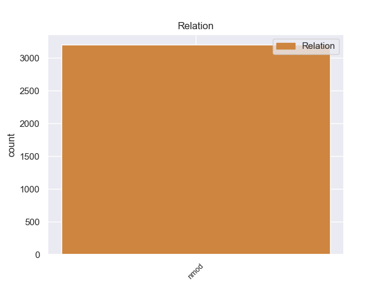
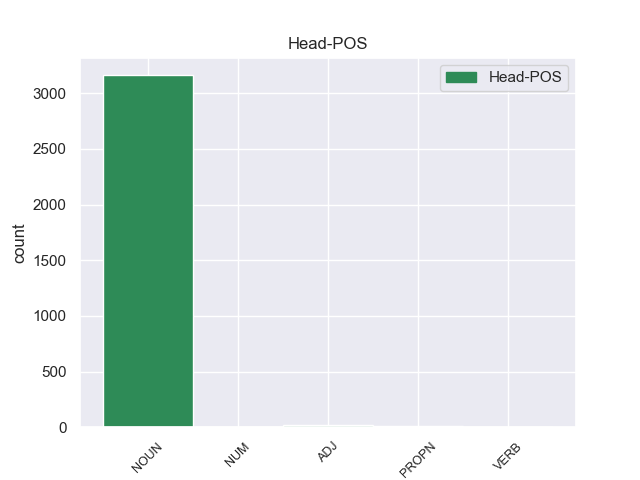
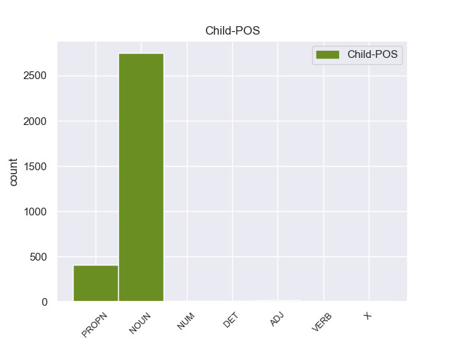

Distribution of features within this leaf



Agreement Rules sorted by frequency.
- When the dependent token is the nominal modifier(nmod) of the head token, and the dependent token is NOUN.
1 Αυτό _ _ _ _ 0 _ _ _
2 μπορεί _ _ _ _ 0 _ _ _
3 να _ _ _ _ 0 _ _ _
4 μην _ _ _ _ 0 _ _ _
5 οδηγήσει _ _ _ _ 0 _ _ _
6 σ _ _ _ _ 0 _ _ _
7 τη _ _ _ _ 0 _ _ _
8 λήξη _ _ _ _ 0 _ _ _
9 του _ _ _ _ 0 _ _ _
10 εν _ _ _ _ 0 _ _ _
11 λόγω _ _ _ _ 0 _ _ _
12 ζητήματος _ _ _ _ 0 _ _ _
13 αλλά _ _ _ _ 0 _ _ _
14 , _ _ _ _ 0 _ _ _
15 σ _ _ _ _ 0 _ _ _
16 τη _ _ _ _ 0 _ _ _
17 μορφή _ _ _ _ 0 _ _ _
18 υπό _ _ _ _ 0 _ _ _
19 την _ _ _ _ 0 _ _ _
20 οποία _ _ _ _ 0 _ _ _
21 την _ _ _ _ 0 _ _ _
22 λάβαμε _ _ _ _ 0 _ _ _
23 , _ _ _ _ 0 _ _ _
24 αυτή _ _ _ _ 0 _ _ _
25 η _ _ _ _ 0 _ _ _
26 αίτηση _ _ _ _ 0 _ _ _
27 άρσης _ _ _ _ 0 _ _ _
28 της _ _ _ _ 0 _ _ _
29 ασυλίας _ _ _ _ 0 _ _ _
30 ήταν _ _ _ _ 0 _ _ _
31 , _ _ _ _ 0 _ _ _
32 κατά _ _ _ _ 0 _ _ _
33 την _ _ _ _ 0 _ _ _
34 άποψη άποψη NOUN _ Case=Acc|Gender=Fem|Number=Sing 0 _ _ _
35 της _ _ _ _ 0 _ _ _
36 Επιτροπής _ _ _ _ 0 _ _ _
37 Νομικών _ _ _ _ 0 _ _ _
38 Θεμάτων θεμάτός NOUN _ Case=Gen|Gender=Fem|Number=Sing 34 nmod _ _
39 , _ _ _ _ 0 _ _ _
40 απαράδεκτη _ _ _ _ 0 _ _ _
41 , _ _ _ _ 0 _ _ _
42 άποψη _ _ _ _ 0 _ _ _
43 την _ _ _ _ 0 _ _ _
44 οποία _ _ _ _ 0 _ _ _
45 συνιστώ _ _ _ _ 0 _ _ _
46 σ _ _ _ _ 0 _ _ _
47 το _ _ _ _ 0 _ _ _
48 Σώμα _ _ _ _ 0 _ _ _
49 να _ _ _ _ 0 _ _ _
50 υιοθετήσει _ _ _ _ 0 _ _ _
51 . _ _ _ _ 0 _ _ _
1 Ο _ _ _ _ 0 _ _ _
2 Εισαγγελέας _ _ _ _ 0 _ _ _
3 σ _ _ _ _ 0 _ _ _
4 τη _ _ _ _ 0 _ _ _
5 Γαλλία Γαλλία PROPN _ Case=Acc|Gender=Fem|Number=Sing 8 nmod _ _
6 έχει _ _ _ _ 0 _ _ _
7 το _ _ _ _ 0 _ _ _
8 δικαίωμα δικαίωμα NOUN _ Case=Acc|Gender=Fem|Number=Sing 0 _ _ _
9 να _ _ _ _ 0 _ _ _
10 εκπληρώνει _ _ _ _ 0 _ _ _
11 τα _ _ _ _ 0 _ _ _
12 καθήκοντά _ _ _ _ 0 _ _ _
13 του _ _ _ _ 0 _ _ _
14 βάσει _ _ _ _ 0 _ _ _
15 του _ _ _ _ 0 _ _ _
16 νόμου _ _ _ _ 0 _ _ _
17 και _ _ _ _ 0 _ _ _
18 το _ _ _ _ 0 _ _ _
19 Σώμα _ _ _ _ 0 _ _ _
20 δεν _ _ _ _ 0 _ _ _
21 λαμβάνει _ _ _ _ 0 _ _ _
22 θέση _ _ _ _ 0 _ _ _
23 σχετικά _ _ _ _ 0 _ _ _
24 με _ _ _ _ 0 _ _ _
25 αυτό _ _ _ _ 0 _ _ _
26 . _ _ _ _ 0 _ _ _
1 Πρέπει _ _ _ _ 0 _ _ _
2 να _ _ _ _ 0 _ _ _
3 επισημανθεί _ _ _ _ 0 _ _ _
4 ότι _ _ _ _ 0 _ _ _
5 ο _ _ _ _ 0 _ _ _
6 Εισαγγελέας _ _ _ _ 0 _ _ _
7 Πλημμελειοδικών _ _ _ _ 0 _ _ _
8 υποστήριξε _ _ _ _ 0 _ _ _
9 σθεναρά _ _ _ _ 0 _ _ _
10 την _ _ _ _ 0 _ _ _
11 αίτηση αίτηση NOUN _ Case=Acc|Gender=Fem|Number=Sing 0 _ _ _
12 επιβολής _ _ _ _ 0 _ _ _
13 μέτρων μέτρων ADJ _ Case=Gen|Gender=Fem|Number=Sing 11 nmod _ _
14 δικαστικής _ _ _ _ 0 _ _ _
15 επιτήρησης _ _ _ _ 0 _ _ _
16 που _ _ _ _ 0 _ _ _
17 υπέβαλαν _ _ _ _ 0 _ _ _
18 οι _ _ _ _ 0 _ _ _
19 ανακριτές _ _ _ _ 0 _ _ _
20 , _ _ _ _ 0 _ _ _
21 υπογραμμίζοντας _ _ _ _ 0 _ _ _
22 τη _ _ _ _ 0 _ _ _
23 σοβαρότητα _ _ _ _ 0 _ _ _
24 και _ _ _ _ 0 _ _ _
25 τη _ _ _ _ 0 _ _ _
26 φύση _ _ _ _ 0 _ _ _
27 της _ _ _ _ 0 _ _ _
28 υπόθεσης _ _ _ _ 0 _ _ _
29 και _ _ _ _ 0 _ _ _
30 χαρακτηρίζοντας _ _ _ _ 0 _ _ _
31 μάλιστα _ _ _ _ 0 _ _ _
32 την _ _ _ _ 0 _ _ _
33 αίτηση _ _ _ _ 0 _ _ _
34 αυτή _ _ _ _ 0 _ _ _
35 ως _ _ _ _ 0 _ _ _
36 απαραίτητη _ _ _ _ 0 _ _ _
37 επί _ _ _ _ 0 _ _ _
38 της _ _ _ _ 0 _ _ _
39 αρχής _ _ _ _ 0 _ _ _
40 . _ _ _ _ 0 _ _ _
1 Τέθηκε _ _ _ _ 0 _ _ _
2 επικεφαλής _ _ _ _ 0 _ _ _
3 επανάστασης _ _ _ _ 0 _ _ _
4 ( _ _ _ _ 0 _ _ _
5 με _ _ _ _ 0 _ _ _
6 το _ _ _ _ 0 _ _ _
7 κίνημα _ _ _ _ 0 _ _ _
8 Εθνικής _ _ _ _ 0 _ _ _
9 Άμυνας _ _ _ _ 0 _ _ _
10 ) _ _ _ _ 0 _ _ _
11 με _ _ _ _ 0 _ _ _
12 έδρα _ _ _ _ 0 _ _ _
13 τη _ _ _ _ 0 _ _ _
14 Θεσσαλονίκη _ _ _ _ 0 _ _ _
15 , _ _ _ _ 0 _ _ _
16 σ _ _ _ _ 0 _ _ _
17 την _ _ _ _ 0 _ _ _
18 οποία _ _ _ _ 0 _ _ _
19 πήγε _ _ _ _ 0 _ _ _
20 και _ _ _ _ 0 _ _ _
21 σχημάτισε _ _ _ _ 0 _ _ _
22 επαναστατική _ _ _ _ 0 _ _ _
23 " _ _ _ _ 0 _ _ _
24 Προσωρινή _ _ _ _ 0 _ _ _
25 Κυβέρνηση κυβέρνηση NOUN _ Case=Acc|Gender=Fem|Number=Sing 0 _ _ _
26 Εθνικής ο DET _ Case=Gen|Gender=Fem|Number=Sing 25 nmod _ _
27 Άμυνας _ _ _ _ 0 _ _ _
28 " _ _ _ _ 0 _ _ _
29 μαζί _ _ _ _ 0 _ _ _
30 με _ _ _ _ 0 _ _ _
31 τους _ _ _ _ 0 _ _ _
32 ναύαρχο _ _ _ _ 0 _ _ _
33 Παύλο _ _ _ _ 0 _ _ _
34 Κουντουριώτη _ _ _ _ 0 _ _ _
35 και _ _ _ _ 0 _ _ _
36 στρατηγό _ _ _ _ 0 _ _ _
37 Παναγιώτη _ _ _ _ 0 _ _ _
38 Δαγκλή _ _ _ _ 0 _ _ _
39 χρησιμοποιώντας _ _ _ _ 0 _ _ _
40 την _ _ _ _ 0 _ _ _
41 Κρητική _ _ _ _ 0 _ _ _
42 Χωροφυλακή _ _ _ _ 0 _ _ _
43 αφού _ _ _ _ 0 _ _ _
44 προηγουμένως _ _ _ _ 0 _ _ _
45 , _ _ _ _ 0 _ _ _
46 σ _ _ _ _ 0 _ _ _
47 τις _ _ _ _ 0 _ _ _
48 25_Σεπτεμβρίου _ _ _ _ 0 _ _ _
49 , _ _ _ _ 0 _ _ _
50 πέρασε _ _ _ _ 0 _ _ _
51 από _ _ _ _ 0 _ _ _
52 την _ _ _ _ 0 _ _ _
53 Κρήτη _ _ _ _ 0 _ _ _
54 , _ _ _ _ 0 _ _ _
55 η _ _ _ _ 0 _ _ _
56 οποία _ _ _ _ 0 _ _ _
57 προσχώρησε _ _ _ _ 0 _ _ _
58 κι _ _ _ _ 0 _ _ _
59 αυτή _ _ _ _ 0 _ _ _
60 σ _ _ _ _ 0 _ _ _
61 την _ _ _ _ 0 _ _ _
62 επανάσταση _ _ _ _ 0 _ _ _
63 . _ _ _ _ 0 _ _ _
1 Σ _ _ _ _ 0 _ _ _
2 τις _ _ _ _ 0 _ _ _
3 29_Μαΐου_1917 _ _ _ _ 0 _ _ _
4 ο _ _ _ _ 0 _ _ _
5 Κωνσταντίνος _ _ _ _ 0 _ _ _
6 αναχώρησε _ _ _ _ 0 _ _ _
7 και _ _ _ _ 0 _ _ _
8 λίγες _ _ _ _ 0 _ _ _
9 μέρες _ _ _ _ 0 _ _ _
10 μετά _ _ _ _ 0 _ _ _
11 ο _ _ _ _ 0 _ _ _
12 Βενιζέλος _ _ _ _ 0 _ _ _
13 σχημάτισε _ _ _ _ 0 _ _ _
14 κυβέρνηση _ _ _ _ 0 _ _ _
15 , _ _ _ _ 0 _ _ _
16 συγκλήθηκε _ _ _ _ 0 _ _ _
17 δε _ _ _ _ 0 _ _ _
18 η _ _ _ _ 0 _ _ _
19 Βουλή _ _ _ _ 0 _ _ _
20 , _ _ _ _ 0 _ _ _
21 η _ _ _ _ 0 _ _ _
22 οποία _ _ _ _ 0 _ _ _
23 είχε _ _ _ _ 0 _ _ _
24 προκύψει _ _ _ _ 0 _ _ _
25 από _ _ _ _ 0 _ _ _
26 τις _ _ _ _ 0 _ _ _
27 εκλογές εκλογές NOUN _ Case=Acc|Gender=Fem|Number=Plur 0 _ _ _
28 της _ _ _ _ 0 _ _ _
29 31_Μαΐου_1915 31_μαΐου_1915 NUM _ Case=Gen|Gender=Fem|Number=Sing 27 nmod _ _
30 . _ _ _ _ 0 _ _ _
1 Η _ _ _ _ 0 _ _ _
2 εταιρεία εταιρεία NOUN _ Case=Nom|Gender=Fem|Number=Sing 0 _ _ _
3 αυτή _ _ _ _ 0 _ _ _
4 σ _ _ _ _ 0 _ _ _
5 τη _ _ _ _ 0 _ _ _
6 Black Black X _ Case=Acc|Gender=Fem|Number=Sing 2 nmod _ _
7 Country _ _ _ _ 0 _ _ _
8 σ _ _ _ _ 0 _ _ _
9 το _ _ _ _ 0 _ _ _
10 Ηνωμένο _ _ _ _ 0 _ _ _
11 Βασίλειο _ _ _ _ 0 _ _ _
12 απασχολεί _ _ _ _ 0 _ _ _
13 80 _ _ _ _ 0 _ _ _
14 άτομα _ _ _ _ 0 _ _ _
15 , _ _ _ _ 0 _ _ _
16 δηλαδή _ _ _ _ 0 _ _ _
17 80 _ _ _ _ 0 _ _ _
18 θέσεις _ _ _ _ 0 _ _ _
19 εργασίες _ _ _ _ 0 _ _ _
20 για _ _ _ _ 0 _ _ _
21 τις _ _ _ _ 0 _ _ _
22 οποίες _ _ _ _ 0 _ _ _
23 υπάρχει _ _ _ _ 0 _ _ _
24 μεγάλη _ _ _ _ 0 _ _ _
25 ανάγκη _ _ _ _ 0 _ _ _
26 , _ _ _ _ 0 _ _ _
27 και _ _ _ _ 0 _ _ _
28 συμμορφώνεται _ _ _ _ 0 _ _ _
29 με _ _ _ _ 0 _ _ _
30 όλες _ _ _ _ 0 _ _ _
31 τις _ _ _ _ 0 _ _ _
32 κοινωνικές _ _ _ _ 0 _ _ _
33 προδιαγραφές _ _ _ _ 0 _ _ _
34 της _ _ _ _ 0 _ _ _
35 νομοθεσίας _ _ _ _ 0 _ _ _
36 του _ _ _ _ 0 _ _ _
37 Ηνωμένου _ _ _ _ 0 _ _ _
38 Βασιλείου _ _ _ _ 0 _ _ _
39 . _ _ _ _ 0 _ _ _
1 Για _ _ _ _ 0 _ _ _
2 την _ _ _ _ 0 _ _ _
3 Ομάδα _ _ _ _ 0 _ _ _
4 μου _ _ _ _ 0 _ _ _
5 υπάρχει _ _ _ _ 0 _ _ _
6 , _ _ _ _ 0 _ _ _
7 παράλληλα _ _ _ _ 0 _ _ _
8 με _ _ _ _ 0 _ _ _
9 ορισμένα _ _ _ _ 0 _ _ _
10 άλλα _ _ _ _ 0 _ _ _
11 σημαντικά _ _ _ _ 0 _ _ _
12 θέματα θέματα NOUN _ Case=Acc|Gender=Fem|Number=Plur 0 _ _ _
13 που _ _ _ _ 0 _ _ _
14 έχουν _ _ _ _ 0 _ _ _
15 ήδη _ _ _ _ 0 _ _ _
16 εν _ _ _ _ 0 _ _ _
17 μέρει μέρει VERB _ Case=Acc|Gender=Fem|Number=Sing 12 nmod _ _
18 θιγεί _ _ _ _ 0 _ _ _
19 , _ _ _ _ 0 _ _ _
20 ένα _ _ _ _ 0 _ _ _
21 κεντρικό _ _ _ _ 0 _ _ _
22 σημείο _ _ _ _ 0 _ _ _
23 σ _ _ _ _ 0 _ _ _
24 το _ _ _ _ 0 _ _ _
25 οποίο _ _ _ _ 0 _ _ _
26 δεν _ _ _ _ 0 _ _ _
27 μπορούμε _ _ _ _ 0 _ _ _
28 να _ _ _ _ 0 _ _ _
29 συμφωνήσουμε _ _ _ _ 0 _ _ _
30 με _ _ _ _ 0 _ _ _
31 την _ _ _ _ 0 _ _ _
32 Επιτροπή _ _ _ _ 0 _ _ _
33 . _ _ _ _ 0 _ _ _
Disagree Examples:
1 Η _ _ _ _ 0 _ _ _
2 σημαντικότητα σημαντικότητα NOUN NOUN Case=Nom|Gender=Fem|Number=Sing 0 _ _ _
3 του _ _ _ _ 0 _ _ _
4 Αχέροντα Αχέροντας PROPN PROPN Case=Gen|Gender=Masc|Number=Sing 2 nmod _ _
5 ήταν _ _ _ _ 0 _ _ _
6 μεγάλη _ _ _ _ 0 _ _ _
7 κατά _ _ _ _ 0 _ _ _
8 την _ _ _ _ 0 _ _ _
9 αρχαιότητα _ _ _ _ 0 _ _ _
10 , _ _ _ _ 0 _ _ _
11 οπότε _ _ _ _ 0 _ _ _
12 και _ _ _ _ 0 _ _ _
13 ιδρύθηκε _ _ _ _ 0 _ _ _
14 σ _ _ _ _ 0 _ _ _
15 την _ _ _ _ 0 _ _ _
16 βορειοανατολική _ _ _ _ 0 _ _ _
17 όχθη _ _ _ _ 0 _ _ _
18 της _ _ _ _ 0 _ _ _
19 Αχερουσίας _ _ _ _ 0 _ _ _
20 το _ _ _ _ 0 _ _ _
21 Νεκρομαντείο _ _ _ _ 0 _ _ _
22 , _ _ _ _ 0 _ _ _
23 ο _ _ _ _ 0 _ _ _
24 σημαντικότερος _ _ _ _ 0 _ _ _
25 τόπος _ _ _ _ 0 _ _ _
26 επικοινωνίας _ _ _ _ 0 _ _ _
27 με _ _ _ _ 0 _ _ _
28 τους _ _ _ _ 0 _ _ _
29 νεκρούς _ _ _ _ 0 _ _ _
30 και _ _ _ _ 0 _ _ _
31 λατρείας _ _ _ _ 0 _ _ _
32 των _ _ _ _ 0 _ _ _
33 θεών _ _ _ _ 0 _ _ _
34 του _ _ _ _ 0 _ _ _
35 Κάτω _ _ _ _ 0 _ _ _
36 Κόσμου _ _ _ _ 0 _ _ _
37 . _ _ _ _ 0 _ _ _
1 Η _ _ _ _ 0 _ _ _
2 σημαντικότητα _ _ _ _ 0 _ _ _
3 του _ _ _ _ 0 _ _ _
4 Αχέροντα _ _ _ _ 0 _ _ _
5 ήταν _ _ _ _ 0 _ _ _
6 μεγάλη _ _ _ _ 0 _ _ _
7 κατά _ _ _ _ 0 _ _ _
8 την _ _ _ _ 0 _ _ _
9 αρχαιότητα _ _ _ _ 0 _ _ _
10 , _ _ _ _ 0 _ _ _
11 οπότε _ _ _ _ 0 _ _ _
12 και _ _ _ _ 0 _ _ _
13 ιδρύθηκε _ _ _ _ 0 _ _ _
14 σ _ _ _ _ 0 _ _ _
15 την _ _ _ _ 0 _ _ _
16 βορειοανατολική _ _ _ _ 0 _ _ _
17 όχθη _ _ _ _ 0 _ _ _
18 της _ _ _ _ 0 _ _ _
19 Αχερουσίας _ _ _ _ 0 _ _ _
20 το _ _ _ _ 0 _ _ _
21 Νεκρομαντείο _ _ _ _ 0 _ _ _
22 , _ _ _ _ 0 _ _ _
23 ο _ _ _ _ 0 _ _ _
24 σημαντικότερος _ _ _ _ 0 _ _ _
25 τόπος τόπος NOUN NOUN Case=Nom|Gender=Masc|Number=Sing 0 _ _ _
26 επικοινωνίας επικοινωνία NOUN NOUN Case=Gen|Gender=Fem|Number=Sing 25 nmod _ _
27 με _ _ _ _ 0 _ _ _
28 τους _ _ _ _ 0 _ _ _
29 νεκρούς _ _ _ _ 0 _ _ _
30 και _ _ _ _ 0 _ _ _
31 λατρείας _ _ _ _ 0 _ _ _
32 των _ _ _ _ 0 _ _ _
33 θεών _ _ _ _ 0 _ _ _
34 του _ _ _ _ 0 _ _ _
35 Κάτω _ _ _ _ 0 _ _ _
36 Κόσμου _ _ _ _ 0 _ _ _
37 . _ _ _ _ 0 _ _ _
1 Η _ _ _ _ 0 _ _ _
2 σημαντικότητα _ _ _ _ 0 _ _ _
3 του _ _ _ _ 0 _ _ _
4 Αχέροντα _ _ _ _ 0 _ _ _
5 ήταν _ _ _ _ 0 _ _ _
6 μεγάλη _ _ _ _ 0 _ _ _
7 κατά _ _ _ _ 0 _ _ _
8 την _ _ _ _ 0 _ _ _
9 αρχαιότητα _ _ _ _ 0 _ _ _
10 , _ _ _ _ 0 _ _ _
11 οπότε _ _ _ _ 0 _ _ _
12 και _ _ _ _ 0 _ _ _
13 ιδρύθηκε _ _ _ _ 0 _ _ _
14 σ _ _ _ _ 0 _ _ _
15 την _ _ _ _ 0 _ _ _
16 βορειοανατολική _ _ _ _ 0 _ _ _
17 όχθη _ _ _ _ 0 _ _ _
18 της _ _ _ _ 0 _ _ _
19 Αχερουσίας _ _ _ _ 0 _ _ _
20 το _ _ _ _ 0 _ _ _
21 Νεκρομαντείο _ _ _ _ 0 _ _ _
22 , _ _ _ _ 0 _ _ _
23 ο _ _ _ _ 0 _ _ _
24 σημαντικότερος _ _ _ _ 0 _ _ _
25 τόπος _ _ _ _ 0 _ _ _
26 επικοινωνίας επικοινωνία NOUN NOUN Case=Gen|Gender=Fem|Number=Sing 0 _ _ _
27 με _ _ _ _ 0 _ _ _
28 τους _ _ _ _ 0 _ _ _
29 νεκρούς νεκρός NOUN NOUN Case=Acc|Gender=Masc|Number=Sing 26 nmod _ _
30 και _ _ _ _ 0 _ _ _
31 λατρείας _ _ _ _ 0 _ _ _
32 των _ _ _ _ 0 _ _ _
33 θεών _ _ _ _ 0 _ _ _
34 του _ _ _ _ 0 _ _ _
35 Κάτω _ _ _ _ 0 _ _ _
36 Κόσμου _ _ _ _ 0 _ _ _
37 . _ _ _ _ 0 _ _ _
1 Η _ _ _ _ 0 _ _ _
2 σημαντικότητα _ _ _ _ 0 _ _ _
3 του _ _ _ _ 0 _ _ _
4 Αχέροντα _ _ _ _ 0 _ _ _
5 ήταν _ _ _ _ 0 _ _ _
6 μεγάλη _ _ _ _ 0 _ _ _
7 κατά _ _ _ _ 0 _ _ _
8 την _ _ _ _ 0 _ _ _
9 αρχαιότητα _ _ _ _ 0 _ _ _
10 , _ _ _ _ 0 _ _ _
11 οπότε _ _ _ _ 0 _ _ _
12 και _ _ _ _ 0 _ _ _
13 ιδρύθηκε _ _ _ _ 0 _ _ _
14 σ _ _ _ _ 0 _ _ _
15 την _ _ _ _ 0 _ _ _
16 βορειοανατολική _ _ _ _ 0 _ _ _
17 όχθη _ _ _ _ 0 _ _ _
18 της _ _ _ _ 0 _ _ _
19 Αχερουσίας _ _ _ _ 0 _ _ _
20 το _ _ _ _ 0 _ _ _
21 Νεκρομαντείο _ _ _ _ 0 _ _ _
22 , _ _ _ _ 0 _ _ _
23 ο _ _ _ _ 0 _ _ _
24 σημαντικότερος _ _ _ _ 0 _ _ _
25 τόπος _ _ _ _ 0 _ _ _
26 επικοινωνίας _ _ _ _ 0 _ _ _
27 με _ _ _ _ 0 _ _ _
28 τους _ _ _ _ 0 _ _ _
29 νεκρούς _ _ _ _ 0 _ _ _
30 και _ _ _ _ 0 _ _ _
31 λατρείας λατρεία NOUN NOUN Case=Gen|Gender=Fem|Number=Sing 0 _ _ _
32 των _ _ _ _ 0 _ _ _
33 θεών θεός NOUN NOUN Case=Gen|Gender=Masc|Number=Plur 31 nmod _ _
34 του _ _ _ _ 0 _ _ _
35 Κάτω _ _ _ _ 0 _ _ _
36 Κόσμου _ _ _ _ 0 _ _ _
37 . _ _ _ _ 0 _ _ _
1 Η _ _ _ _ 0 _ _ _
2 ύπαρξη ύπαρξη NOUN NOUN Case=Nom|Gender=Fem|Number=Sing 0 _ _ _
3 του _ _ _ _ 0 _ _ _
4 μαρμάρου μάρμαρο NOUN NOUN Case=Gen|Gender=Neut|Number=Sing 2 nmod _ _
5 σ _ _ _ _ 0 _ _ _
6 την _ _ _ _ 0 _ _ _
7 επιφάνεια _ _ _ _ 0 _ _ _
8 του _ _ _ _ 0 _ _ _
9 εδάφους _ _ _ _ 0 _ _ _
10 συνετέλεσε _ _ _ _ 0 _ _ _
11 σ _ _ _ _ 0 _ _ _
12 την _ _ _ _ 0 _ _ _
13 εύκολη _ _ _ _ 0 _ _ _
14 εξόρυξή _ _ _ _ 0 _ _ _
15 του _ _ _ _ 0 _ _ _
16 , _ _ _ _ 0 _ _ _
17 η _ _ _ _ 0 _ _ _
18 οποία _ _ _ _ 0 _ _ _
19 έγινε _ _ _ _ 0 _ _ _
20 κυρίως _ _ _ _ 0 _ _ _
21 από _ _ _ _ 0 _ _ _
22 τον _ _ _ _ 0 _ _ _
23 6ο _ _ _ _ 0 _ _ _
24 έως _ _ _ _ 0 _ _ _
25 τον _ _ _ _ 0 _ _ _
26 7ο _ _ _ _ 0 _ _ _
27 αιώνα _ _ _ _ 0 _ _ _
28 π.Χ. _ _ _ _ 0 _ _ _